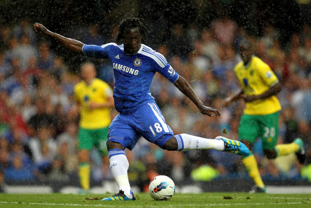
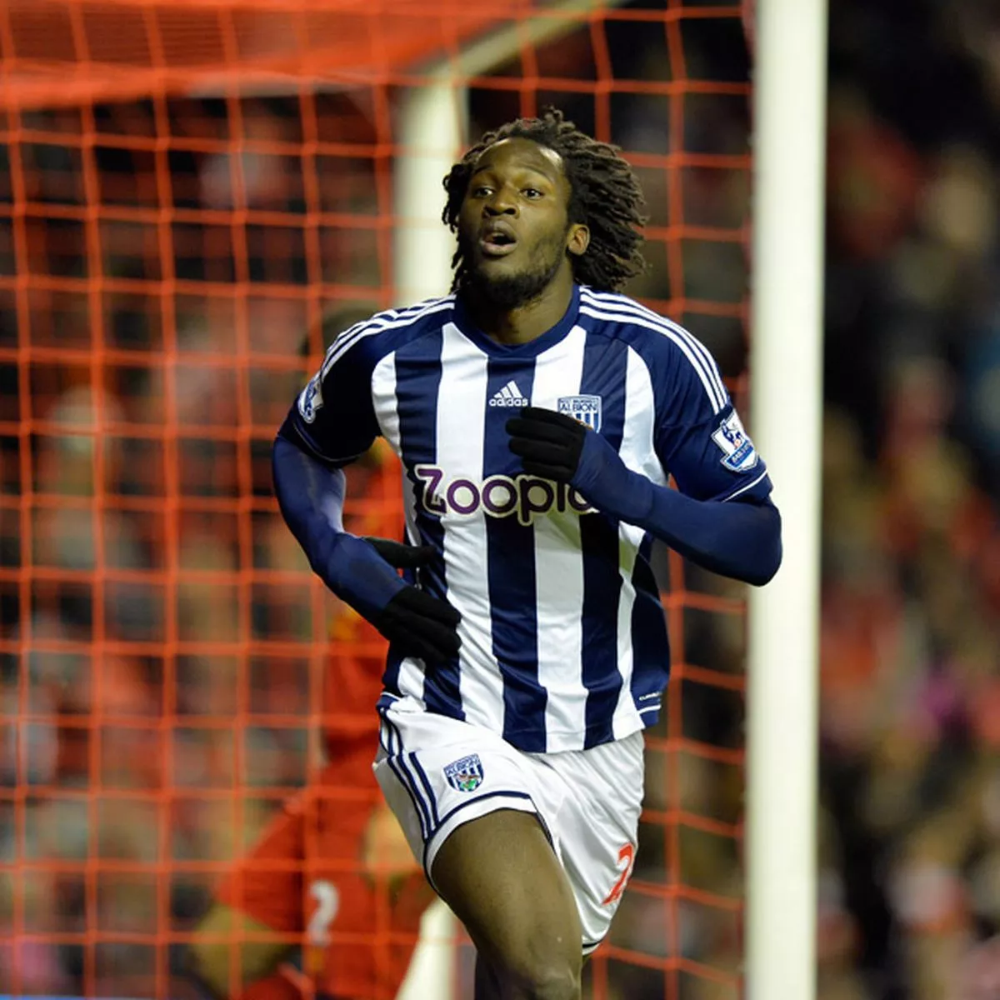
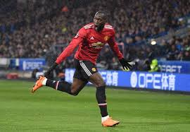
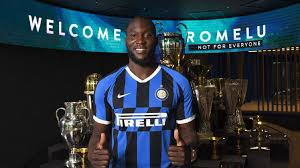
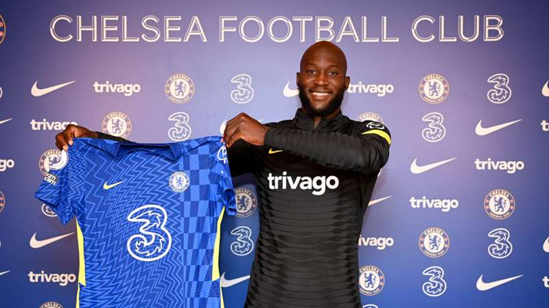
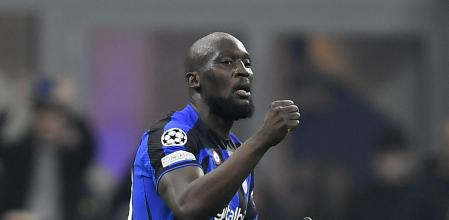
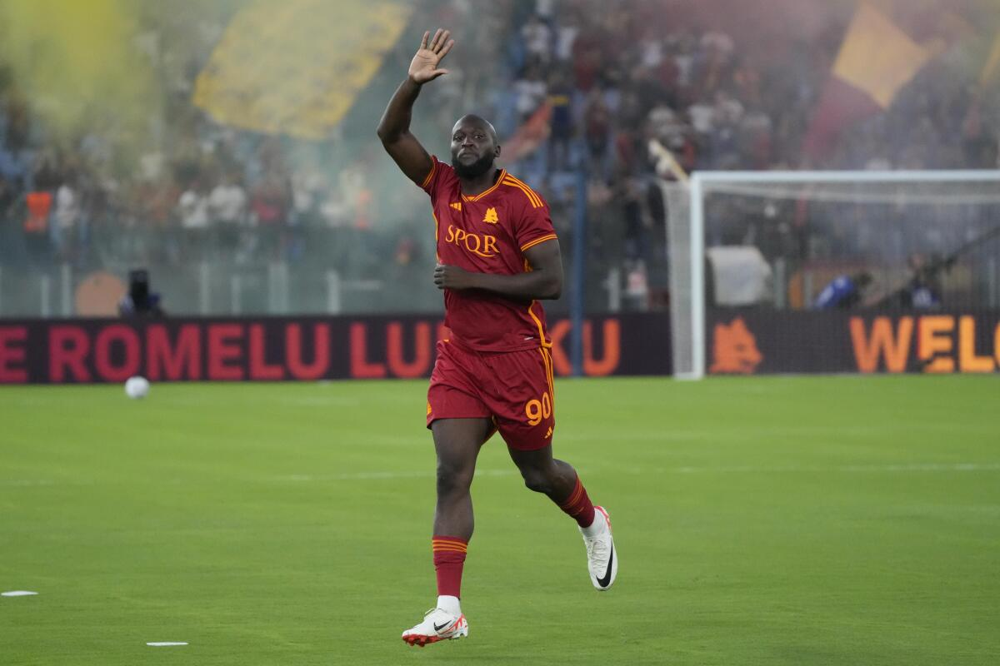
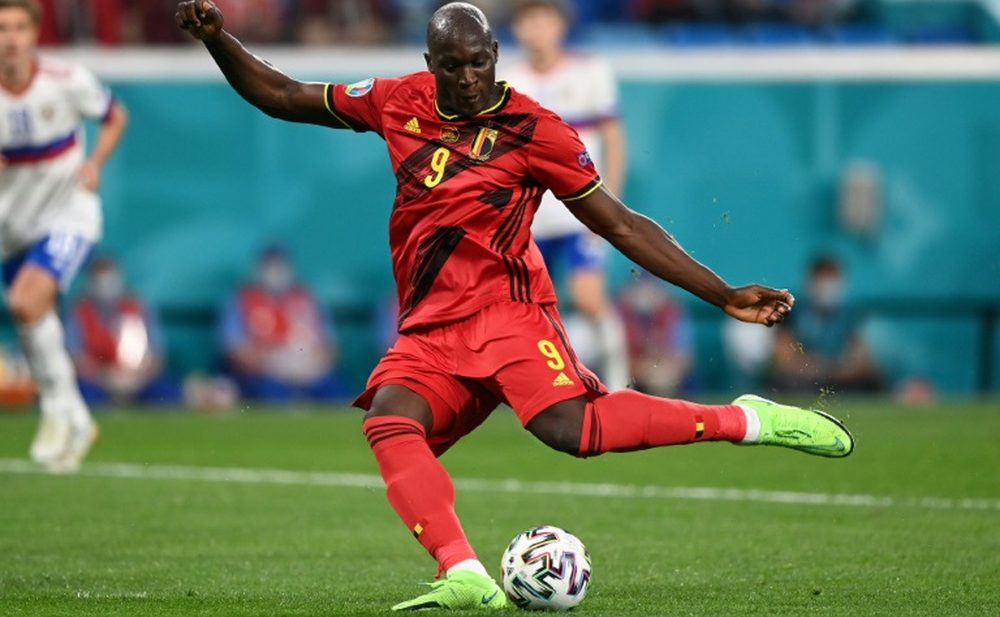

RSC Anderlecht (Bélgica): Período: 2008 a 2011 Partidos: 98 Goles: 41

Chelsea (Inglaterra): Período: 2011 a 2012 Partidos: 12
West Bromwich Albion (Inglaterra): Período: 2012 a 2013 Partidos: 38 Goles: 17
Everton (Inglaterra): Período: 2013 a 2017 Partidos: 166 Goles: 87

Manchester United (Inglaterra): Período: 2017 a 2019 Partidos: 96 Goles: 42
Inter (Italia): Período: 2019 a 2021 Partidos: 95 Goles: 64
Chelsea (Inglaterra) (segunda etapa): Período: 2021 a 2022 Partidos: 44 Goles: 15
Inter (Italia) (segunda etapa): Período: 2022 a 2023 Partidos: 37 Goles: 14
Roma (Italia): Período: 2023 al presente Partidos: 31 Goles: 16
Selección belga: Período: 2010 al presente Partidos: 113 Goles: 83
